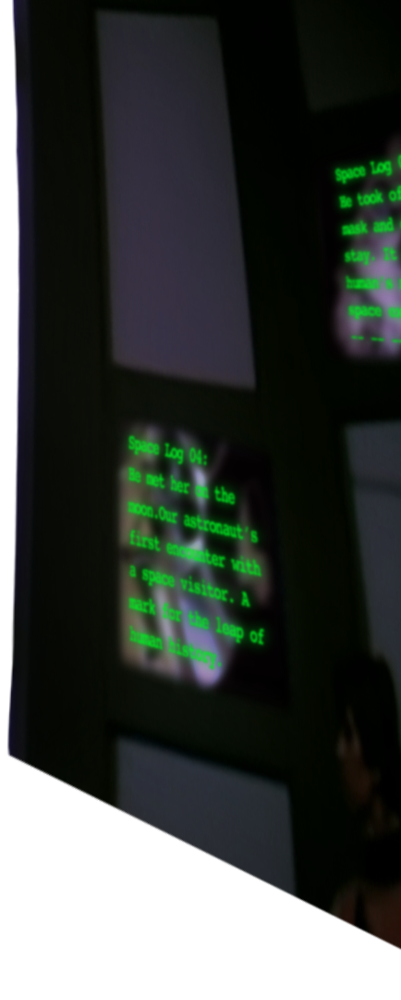
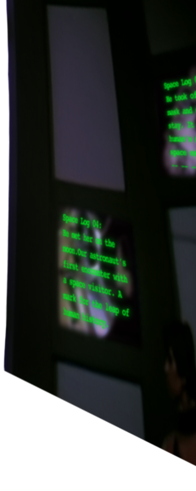

二零一四年我上初二，那年春節，爸爸那邊的親戚都來家裏打麻將，我和大我約十歲的大堂姐在客廳看電視。那時《我是歌手2》初開播，還沒有一炮而紅的香港小歌后。零碎的洗麻將聲裏，大堂姐把頻道調到湖南臺，重播，第一期。第一個上臺演出的是我不認識的中年男人，白西裝配藍色牛仔褲，眉毛畫得有些太彎太長，顯得有點滑稽。他唱的一首歌叫《月亮惹的禍》，我沒有聽過。大堂姐說，她長大的時候（那約是九十年代末，千禧年尚未來時），大街小巷都播這首歌。我說這麽厲害啊。唱得是還不錯。一首唱完他鞠了一躬，說，我是歌手，張宇。
從那一刻到他成為我往後青春時代最柔軟的一顆月亮，中間的過程已經模糊了。後來知道參賽時他嗓音已經大不如前，隨著賽程推進，翻唱伍佰、崔健、楊乃文（那時我都還並不認識），時而顯得力不從心。或許我是被他的主持吸引也說不定，他恰到好處的沈穩、幽默與真誠拼成一個百分之百，讓人想要擁抱時不怕被銳角刺傷的圓。每周節目播前，網上會有觀眾透露下一期的曲單，我就先去聽。聽過原唱後初聽張宇翻唱，有時其實覺得錯愕：這樣唱真的好聽嗎？但又忍不住在節目後一遍遍循環，直到某一刻他的聲音成了一種似乎「不正確的正確」。唱完《離愛不遠》後他說，如果今天這場演出未能讓大家喜歡上這首歌，那是演出者沒有做好。十年後在紐約街頭，我仍然還從YouTube上找到這場演出，巴士將我與它一起駛離家的方向。
熟悉張宇的音樂後，不能免俗地聽他的苦情歌多了。《月亮惹的禍》並不苦，不懂為什麽人們總將它錯誤分類。我偏愛淒愴婉轉的小調，這首太激昂，我其實並不常聽。偶爾想起的時候，就又回到十年前清脆碰撞的麻將聲裏，我遇見一顆美麗的月亮。
從那一刻到他成為我往後青春時代最柔軟的一顆月亮，中間的過程已經模糊了。後來知道參賽時他嗓音已經大不如前，隨著賽程推進，翻唱伍佰、崔健、楊乃文（那時我都還並不認識），時而顯得力不從心。或許我是被他的主持吸引也說不定，他恰到好處的沈穩、幽默與真誠拼成一個百分之百，讓人想要擁抱時不怕被銳角刺傷的圓。每周節目播前，網上會有觀眾透露下一期的曲單，我就先去聽。聽過原唱後初聽張宇翻唱，有時其實覺得錯愕：這樣唱真的好聽嗎？但又忍不住在節目後一遍遍循環，直到某一刻他的聲音成了一種似乎「不正確的正確」。唱完《離愛不遠》後他說，如果今天這場演出未能讓大家喜歡上這首歌，那是演出者沒有做好。十年後在紐約街頭，我仍然還從YouTube上找到這場演出，巴士將我與它一起駛離家的方向。
熟悉張宇的音樂後，不能免俗地聽他的苦情歌多了。《月亮惹的禍》並不苦，不懂為什麽人們總將它錯誤分類。我偏愛淒愴婉轉的小調，這首太激昂，我其實並不常聽。偶爾想起的時候，就又回到十年前清脆碰撞的麻將聲裏，我遇見一顆美麗的月亮。